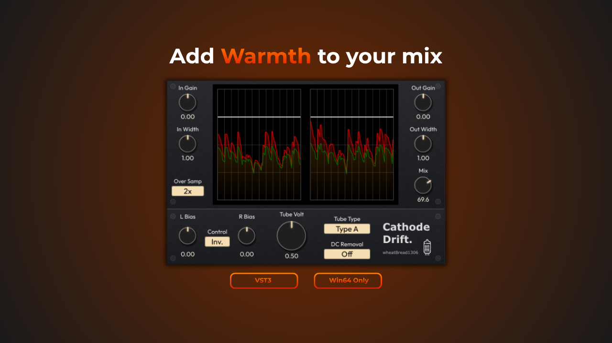

Cathode Drift.
A custom distortion plugin that applies independent DC offsets to the left and right channels, processing the signal through a clipper.

Project Overview
Cathode Drift. is a distortion plugin that generates a unique crunch by adding independent DC offsets to the left and right channels and passing the signal through a clipper.
It's perfect for simple yet aggressive sound design, bringing unpredictable variations to the stereo image.
Background
This plugin started from a desire to easily apply opposing DC offsets to the L/R channels as a way to widen the stereo image. Affordable plugins didn't allow independent L/R DC offset control, and attempts to combine freeware tools in FLStudio's Patcher resulted in crashes, which led me to build my own. Existing high-end options with similar functionality had analog-style meters that were hard to read, and their DC-cut HPFs only reached down to 40Hz—so I implemented digital metering and a cutoff selection starting from 5Hz.
Technical Challenges
1. Avoiding Parameter Linking Conflicts During Patch Loading
Implementing a 'link mode' to synchronize left and right parameters caused an issue during patch (preset) loading. When one knob's value updated during loading, the link function unintentionally triggered, overwriting the correct setting of the other knob.
I implemented an internal flag to temporarily bypass (disable) the parameter linking process exclusively during the patch data loading sequence. This successfully balanced the convenience of the link function with accurate state restoration.
2. Resolving Binary Data Embedding Issues in Projucer (XML Parsing Problem)
When attempting to embed the preset XML file generated by the getStateInformation function as 'BinaryData' in Projucer, a loading error occurred. The file, despite being long data, was mistakenly recognized and parsed as text data due to an end-of-file character (or similar) within it, causing the loading to abort after the first few characters.
I changed the extension of the preset file from .xml to a format recognized as binary data (such as .dat or .bin). This prevented Projucer from interpreting it as text and allowed the data to be successfully embedded into the app as complete binary without any loss.
3. Resolving GUI Thread Freezing When Displaying the Info Screen
The initial implementation used JUCE's standard AlertWindow (alert popup) when the plugin's 'Info' button was pressed. However, the real-time memory allocation (new/delete) associated with OS-native window creation caused the GUI thread to block for about a second upon invocation, significantly degrading the user experience.
I discarded the approach of generating a popup window each time. Instead, I changed to a method where a Component for the Info screen is drawn and placed within the plugin's interface in advance, and its visibility is simply toggled using setVisible(bool) in response to button clicks. As a result, the thread blocking was eliminated, achieving smooth UI responsiveness.
4. Optimizing for a CPU/Compiler-Friendly DSP Loop
In the deepest, per-sample loop processing the audio signal (such as the loop within processBlock), I thoroughly designed the code to eliminate conditional branches like 'if' statements as much as possible.
This prevented 'branch prediction misses (penalties)' in the CPU pipeline processing and created a state where compiler optimizations (such as auto-vectorization) could be maximally effective. As a result, I achieved low-load DSP processing that runs stably even in an audio plugin containing heavy processing.